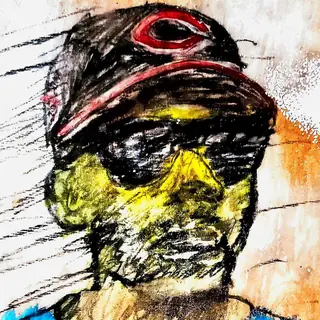
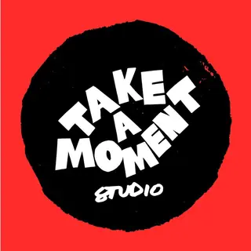
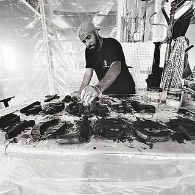

No photo yet
Artwork
Art City (Cincinnati Art Week edition Japanese-style rice lager)
Bailey Elderberry
Walnut Hills
Program · Sat–Sat, Oct 3–10
2026 (inaugural)
From October 3–10 2026, Cincinnati Art Week brings exhibitions, pop-up galleries, social gatherings, and special programming to Over-the-Rhine.
Cincinnati is an art city. It’s home to one of the Midwest's most vibrant creative communities. Cincinnati Art Week invites you to experience it.
Designed by artists, the week connects residents and visitors with exhibitions, conversations, creative experiences, public programming and the people shaping Cincinnati’s cultural landscape.
Cincinnati Art Week begins in Over-the-Rhine and grows from there. Each year, we'll expand into new neighborhoods, strengthening connections between artists, organizations, and the communities they call home.
Source: threads.com (opens in a new tab)
During BLINK 2019 and again in BLINK 2022, we transformed retail space into a vibrant and ephemeral cultural hub and lounge co-created by 45+ artists and collaborators. (Cincy Nice Social House) (cincynice.com (opens in a new tab))
Cincy Nice founders Billy and Destinee Thomas previously served as co-producers of BLINK in 2022 and 2024, helping bring to life projects including the Cincy Nice Social House artist lounge, and several festival firsts including the Cincinnati Skate Park pop-up, Asha Ama’s fashion show, Brazilian artist VJ Suave’s moving tricycle projection and the Breonna’s Garden augmented reality experience. (citybeat.com (opens in a new tab))
Cincinnati Art Week is a new annual celebration of Cincinnati's creative community, bringing together artists, galleries, cultural spaces, neighborhoods, and visitors for one highly visible, energized week. (cincinnatiartweek.com (opens in a new tab))
2026 — PILOT YEAR Establish the platform, build recognition, and build key partnerships. (docs.google.com (opens in a new tab))
2027 — EXPANSION Solidify and grow with more widespread activations and presence. (plan) (docs.google.com (opens in a new tab))
2028 — CULTURAL MOMENTUM Expand into a citywide cultural moment with growing regional and national attention. (plan) (docs.google.com (opens in a new tab))
2036 — INTERNATIONAL DESTINATION Recognized globally by visitors and major brands, activators, & satellite festivals. (plan) (docs.google.com (opens in a new tab))
| Ticket or pass | Price | Details |
|---|---|---|
| General (exhibitions, pop-up galleries, most programming) (opens in a new tab) | Free | Most experiences are free to attend. Select special programs may require reservations or tickets. We also encourage visitors to support participating artists and local businesses whenever possible. |
| NO GRID: A Creative Conversation Series (Wed Oct 7) — free RSVP (opens in a new tab) | Free | Free ticket via Eventbrite (organizer: Cincy Nice); sales open 2026-09-10, close 2026-10-07. |
Sources: cincinnatiartweek.com (opens in a new tab) · eventbrite.com (opens in a new tab)
Exhibitions + Art Market · Meet the Artists · CAW Offsite Opening Celebration
Exhibitions + Art Market · MAKE IT · Meet the Artists
Exhibitions + Art Market
Exhibitions + Art Market · Meet the Artists · Neighborhood Programming
Exhibitions + Art Market · Visiting Artist Welcome · CAW Happy Hour · Meet the Artists · NO GRID
Exhibitions + Art Market · Meet the Artists · CAW Offsite
Exhibitions + Art Market · Meet the Artists
Final Day of Exhibitions + Art Market · Final Meet the Artists
Source: cincinnatiartweek.com (opens in a new tab)Themes as the organizers publish them.

Javarri LewisCuratorial Advisor (Creative Collaborator)Curator · Speaker · 2 eventsMz. IcarNew York, NYArtist · 2 worksOliver BarrettSpeaker · Artist · 2 eventsSarah SchmidtSunshine MallSpeaker · Artist · 2 events
Take a Moment StudioCincinnati, OHSpeaker · Artist · 2 events
Gee HortonGee Horton StudiosArtist · 1 workArtwork
Bailey Elderberry
Walnut Hills
Artwork
Mz. Icar
Over-the-Rhine
Artwork
Chas Wiederhold
Over-the-Rhine
Artwork
Gee Horton
Over-the-Rhine
1 venue has no published address, so it is not on the map.
1417 Main St · Over-the-Rhine
Mon, Oct 5 · Wed, Oct 7
1600 Race St · Over-the-Rhine
Wed, Oct 7
25 E. 15th St · Over-the-Rhine
Sat, Oct 3 · Wed, Oct 7 · Thu, Oct 8
636 Race St · Downtown (Central Business District)
Wed, Oct 7
1345 Main St · Over-the-Rhine
Thu, Oct 1 to Sun, Oct 18
918 E McMillan St · Walnut Hills
Over-the-Rhine
Sat, Oct 3 to Sat, Oct 10
Address unconfirmed · not on the map
With support from
Community partners
Partner
Storefront / developer partner
Community Impact Advisor
Collaboration (Art City beer)
Program partner (NO GRID)
NO GRID venue
Sources: cincinnatiartweek.com (opens in a new tab) · cincinnatiartweek.com (opens in a new tab) · cincinnatiartweek.com (opens in a new tab)Tiers and names as the organizers list them; logos unaltered.
Cincinnati Art Week is a new annual celebration of Cincinnati's creative community, bringing together artists, galleries, cultural spaces, neighborhoods, and visitors for one highly visible, energized week.
The inaugural week takes place throughout storefronts and cultural spaces across Over-the-Rhine. The full schedule and interactive map will be announced soon.
Most experiences are free to attend. Select special programs may require reservations or tickets. We also encourage visitors to support participating artists and local businesses whenever possible.
Expect exhibitions, pop-up galleries, artist talks, performances, happy hours, public programming, and opportunities to meet the people shaping Cincinnati's creative community.
Anyone with a sense of curiosity. We welcomes artists, galleries, collectors, students, visitors, neighborhood residents, and anyone interested in exploring creativity.
Profile of the inaugural Cincinnati Art Week (Oct. 3-10) and its co-founders, with a preview of the Welcome Center hub at 1600 Race St., work by artists such as Mz. Icar and Chas Wiederhold, Jason Snell's NO GRID conversation series and the Art City beer at Esoteric Brewing.
Art WeekBLINKStartupCincyMore
cincinnatimagazine.com
Visit Cincy's October 2026 roundup of events across the region, with listings that include BLINK, BLINK: Run the Night, the Asianati Night Market at BLINK and Cincinnati Art Week alongside fall festivals and Halloween events.
BLINKArt Week
visitcincy.com
Digest of five large October 2026 events: BLINK (Oct. 8-11, five zones, Ready. Set. BLINK! replacing the parade), the FotoFocus Biennial (74 exhibitions at 65 venues, free Biennial Pass), the inaugural Cincinnati Art Week (Oct. 3-10 in Over-the-Rhine), StartupCincy Week and a new MORTAR conference.
BLINKFotoFocusArt WeekStartupCincy
moversmakers.org
CAW introduces Art City, a special-edition Esoteric Brewing Japanese-style rice lager with label art by @baileyelderberry.
Art Week
instagram.com
Everything on this page comes from these public pages. Counts are records in this guide.
Something wrong or missing? Report a correction (opens in a new tab).
↑ ↓ to moveEnter to openEsc to close